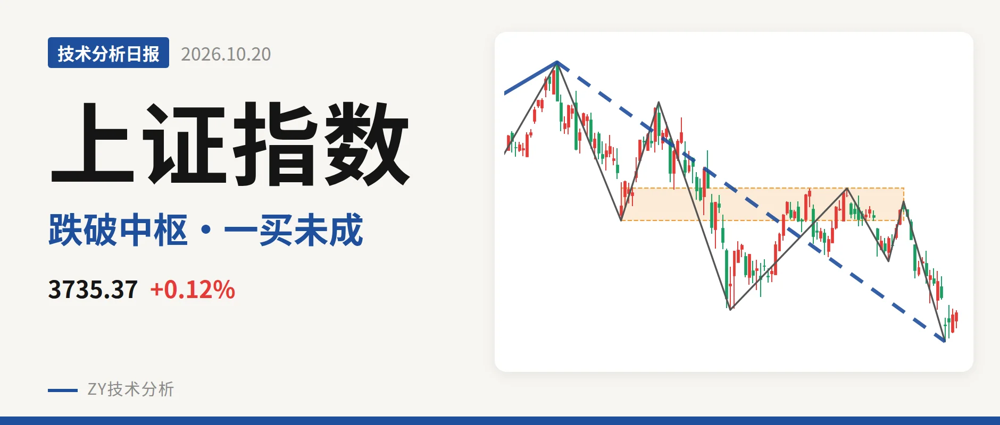
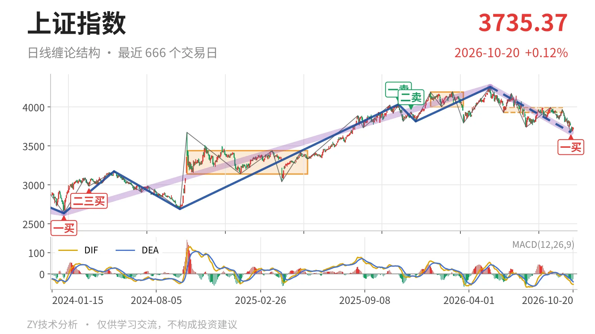
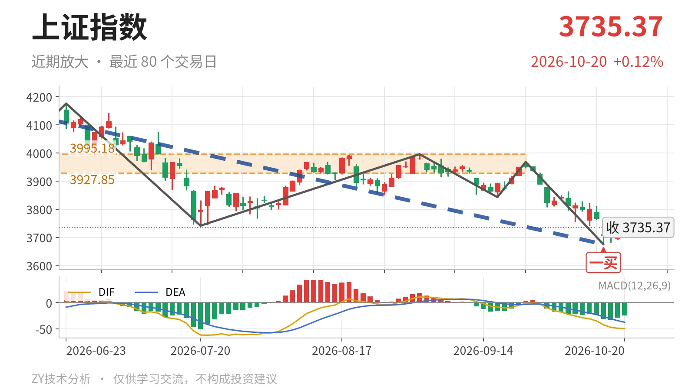

上证指数｜跌破中枢下沿 一买后反弹未成笔

最近日线中枢 3927.85—3995.18点，收盘位于中枢之下
一句话：日线下跌线段仍在延续，3674点一买后反弹未成笔，反压看3928点附近。
📉 走势结构：日线下跌线段仍在延续，反弹未改结构
更大级别上，2024年2月5日至2026年5月14日的上涨段从2635.09点升至4258.86点，涨幅约61.6%。当前价3735.37点仍高于2021年7月28日至2023年5月9日的线段中枢上沿3418.95点，因此更大级别上涨结构没有被破坏。但5月14日至10月15日的回落段也还在延续，跌幅约13.7%。日线线段上，5月14日至10月15日的下跌线段已经包含7笔，低点3674.82点，至今没有结束。10月16日至10月20日只有3根K线，最高3750.77点，尚未构成向上笔，所以日线线段方向仍未扭转。

📍 中枢位置：跌破最近中枢下沿，中枢下移
日线笔中枢出现下移。1月14日至3月23日中枢在4002.78—4190.87点，之后6月8日至9月22日中枢下移到3927.85—3995.18点。最新收盘3735.37点低于最近中枢下沿3927.85点约192点，幅度约4.9%。这说明价格已跌破最近日线笔中枢，且中枢中轴从4096.82点下移到3961.51点。3928点附近由支撑转为反压，3995点一线是中枢上沿。
🔍 买卖点：10月15日一买为笔级别，反弹未成笔
日线笔级别上，10月15日形成一买，价格3674.82点，所在下跌笔为9月22日至10月15日。该下跌笔已经结束，因此这个一买不是暂定。但10月16日至10月20日的反弹只有3根K线，尚未走出向上笔，买点后的结构确认还不够。此前2025年11月14日一卖4034.08点和2025年12月8日二卖3936.31点一个比一个低，且之后5月14日又创出4258.86点新高，说明这两个卖点只对应日线笔级别，未能终结日线线段。当前10月15日一买同样只对应日线笔。

⚡ 背驰：新低不新弱，促成日线一买
最关键的对比是两段日线下跌笔。6月23日至7月20日下跌笔从4175.35点跌至3741.11点，绿柱面积289，DIF低点-61.8；9月22日至10月15日下跌笔从3967.68点跌至3674.82点，价格创出新低，但绿柱面积只有192，DIF低点-42.2。价格新低而面积与DIF均未创新低，属于新低不新弱，构成日线笔级别盘整背驰。这正是10月15日一买的结构来源。最新日线MACD的DIF仍在零轴下方，也说明背驰级别只限日线笔，还没有传导到线段。
🧭 关键位置观察：3928点与3675点定短线强弱
若后续反抽不能回到最近中枢下沿3928点附近上方，结构上很可能构成日线笔三卖，3674点一买后的回升就只是弱反弹。若重新站上3995点中枢上沿附近，下跌更可能转为中枢扩展，而不是日线线段继续下探。下方3674.82点若被跌破，则10月15日一买被破坏，日线下跌线段继续向下寻找结构支撑。当前结构仍偏弱：中枢下移、价格低于最近中枢下沿、反弹未成笔。短线强弱分界看3928点附近，下方支撑观察3675点附近。
⚠️ 本文为基于公开行情数据的缠论技术结构记录，由程序自动计算并生成，仅供学习交流，不构成任何投资建议。市场有风险，投资需谨慎。